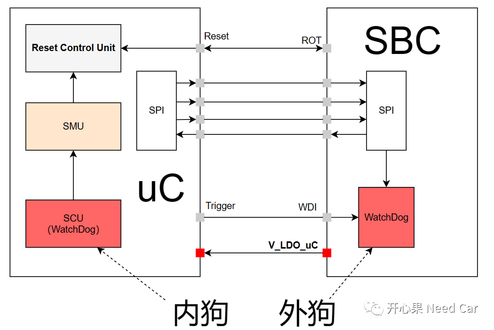
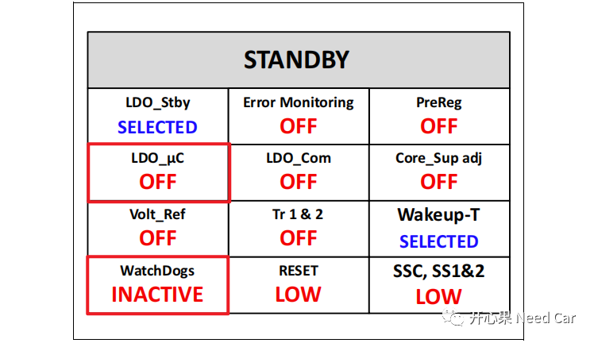
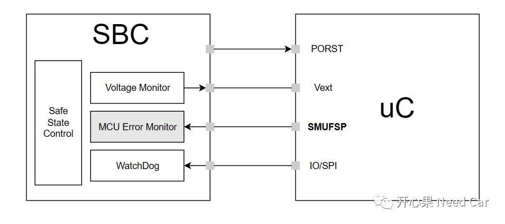
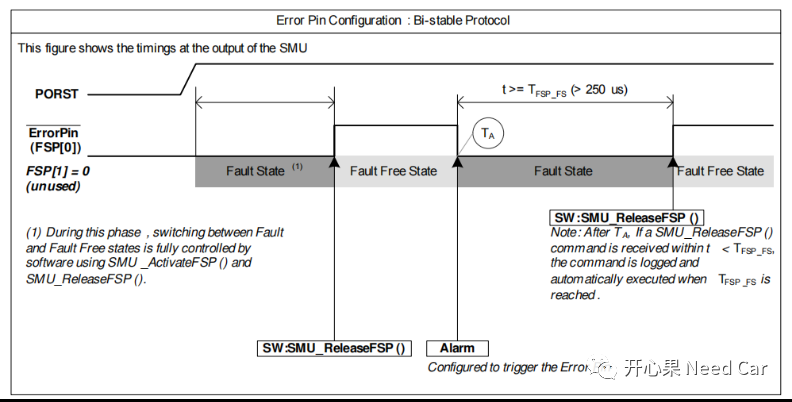
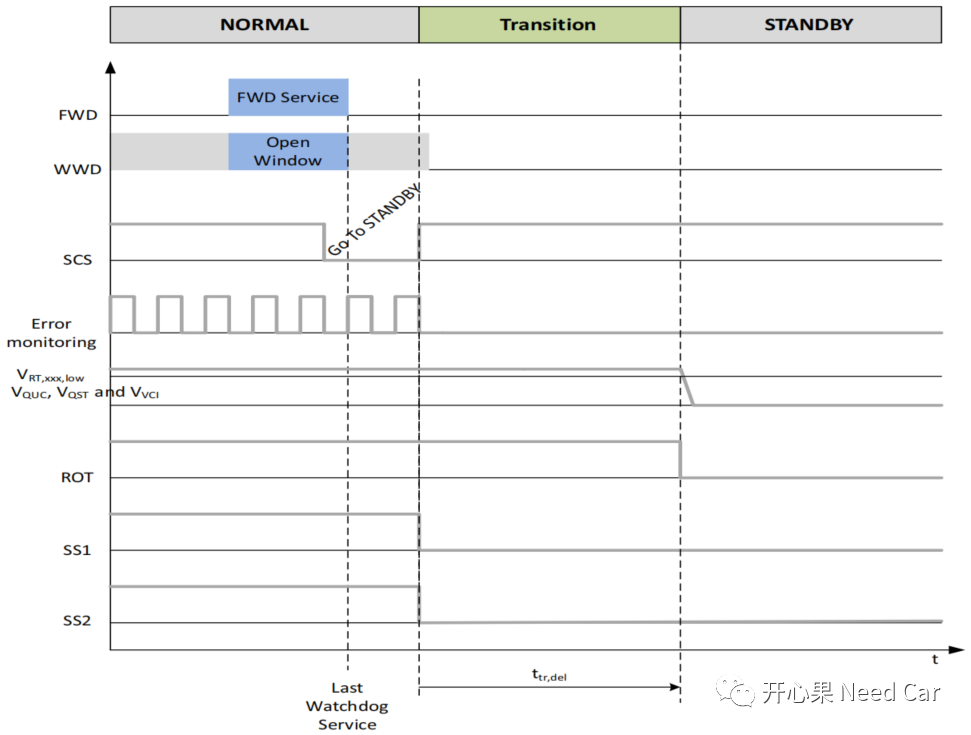
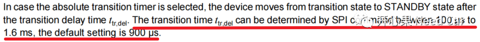

开心果 Need Car · 2023-05-16T06:58:00+08:00 · 微信原文
关于看门狗的文章，可以参考前文《为什么需要外部看门狗？》、《嵌入式开发：TLF35584外狗之WWD》等。本文主要整理几个关于看门狗的工程问题。
Q1：外狗和内狗的监控范畴
A1：内狗主要监控程序运行后的软件状态，确切说，内狗主要监控OS启动后，周期性Task、非周期性Task、软件时序的运行状态。多数软件架构设计中，需要OS启动后，内狗功能使能。因此，内狗存在程序初始化和程序shutdown的监控盲区。为了防止程序在初始化和shutdown中出现异常，可以启用外狗监控。
提示：工程中，如果软件开发的不够鲁棒，启用看门狗以后，可能带来reset问题。
Q2：程序Shutdown过程中，外部看门狗由谁关闭


Q3：SMU（Safety Managing Unit）的FSP与SBC关系
A3：工程开发过程中，大家可能听过FSP（Fault Signaling Protocol)这样一个名词。FSP属于功能安全的范畴，主要作用是：uC将失效状态告知外部监控器件（eg：SBC），由外部监控器件做进一步的异常处理（eg：Reset）。uC的FSP与SBC之间的关系示意如下：


4、TLF35584状态由NORMAL切换STANDBY模式时，收到唤醒事件，如何处理？
工程中，常常碰到休眠问题，所以，理解好SBC状态切换有助于问题的分析。本文讨论一下TLF35584状态由NORMAL到STANDBY模式变化分析，如下所示：


往期精彩回顾
TRACE32调试：基础调试技巧之SystemMode、SNOOPer
从CAN Transceiver角度，理解两帧网络管理报文唤醒网络的原理
Bootloader开发：为什么需要SBL（Secondary Bootloader）?
Autosar EcuM：APP由RUN到POST_RUN浅析